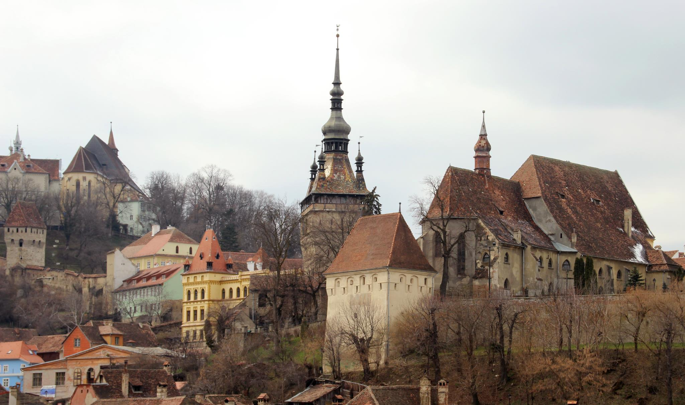
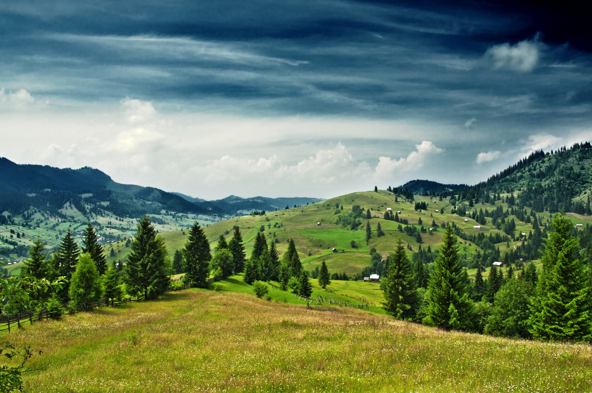

Calatorie in Romania
Ok. Suntem in Bucuresti, capitala Romaniei.
Probabil vrei sa stai undeva peste noapte ca sa te odihnesti inainte de inceperea calatoriei. Vrei ceva modern sau vrei sa simti aerul istoric? Atheene Palace Hilton, altfel Hotel Epoque.
Acum probabil vrei sa incerci un pic de cultura, dar de unde sa incepi? Ai grija sa mergi pe centrul vechi inainte de toate.
Acum probabil simti nevoia de ceva aer. Fa o plimbare in Parcul Herastrau si fa-ti un drum pana la Muzeul National de Arta. Seara, schimba-ti tinuta, pentru ca e timpul sa vezi cea mai buna orchestra din Romania cantand la Ateneu.
.A doua zi fa o excursie pana la fosta cea mai mare cladire din lume: Palatul Parlamentului. Acum e timpul sa vizitezi Muzeul Taranului, nu-i asa? Si Muzeul Satului, o reprezentare a arhitecturii rurale a Romaniei.
Timpul sa parasim capitala pe sub Arcul de Triumf si sa ne continuam calatoria.
Vremea sa vizitam zona rurala! Afara din capitala vei gasi o tara cu totul diferita. Te vei indragosti de peisaje si cultura in timp ce mergem catre nord, spre Ungaria.
Prima oprire: Sinaia, ca sa vizitam Castelul Peles. Inconjurat de pajisti verzi, emana un aer de poveste.
Si, la mica distanta, Muntii Bucegi.
Si Sfinxul

Fa-ti drum pana la Brasov si viziteaza un simbol al orasului, Biserica Neagra. Construita in stil Gotic spre sfarsitul secolului al XIV-lea, a rezistat in timpurile otomanilor si chiar si unui incendiu.
.La Vest de Brasov, vei vedea Sibiu... Dar inainte, sa facem un drum pe Transfagarasan, numit de prezentatorul emisiunii Top Gear "cel mai frumos drum din lume".

Sibiu:
Mai la nord, te duci acum la Sighisoara.
Te-ai indragostit? Nu inca?
Pajisti:
...si inainte catre taramul care l-a inspirat pe Bram Stoker sa scrie despre Dracula, Transilvania.
Castelul Bran:
Cluj:
Mai departe spre Muntii Gutai si lacurile albastre care se gasesc acolo:

Timpul sa ne intoarcem la muzica de traditie si la faimoasele manastiri ale Bucovinei.
Dupa fiecare victorie, Stefan cel Mare construia cate o manastire, nu departe de faimosii Muntii Carpati. Pictate atat pe exterior cat si pe interior, aceste manastiri declarate patrimoniu de catre UNESCO spun povesti despre trecutul Romaniei.
Ultimul stop, si posibil cel mai bun, Delta Dunarii, a doua ca marime din Europa. Ti-ai dorit vreodata sa fii inconjurat de frumusetea naturii neatinsa de oameni? Vino in Romania, in Delta!